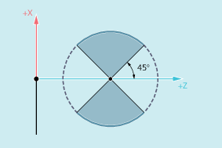
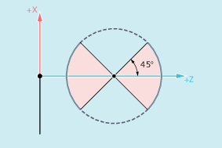
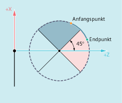

Der unter G335/G336 programmierte Kreisbogen muss in einem Bereich liegen, in dem die spezifizierte Gewindehauptachse (I, J oder K) über den gesamten Kreisbogen den Hauptachsanteil am Kreisbogen hat:
|  Erlaubte Bereiche für die Z-Achse (Steigung mit |  Erlaubte Bereiche für die X-Achse (Steigung mit |
Ein Wechsel der Gewindehauptachse, wie im folgenden Bild dargestellt, ist nicht erlaubt:
Ballige Gewinde: Nicht erlaubter Bereich
Auch bei aktiven Frames ist G335 und G336 möglich. Es ist allerdings darauf zu achten, dass im Basiskoordinatensystem (BKS) die erlaubten Kreisbogenbereiche eingehalten werden.
Für die Kreisprogrammierung unter G335/G336 gelten die bei der Kreisprogrammierung mit G2/G3 beschriebenen Randbedingungen (siehe "Kreisinterpolation").